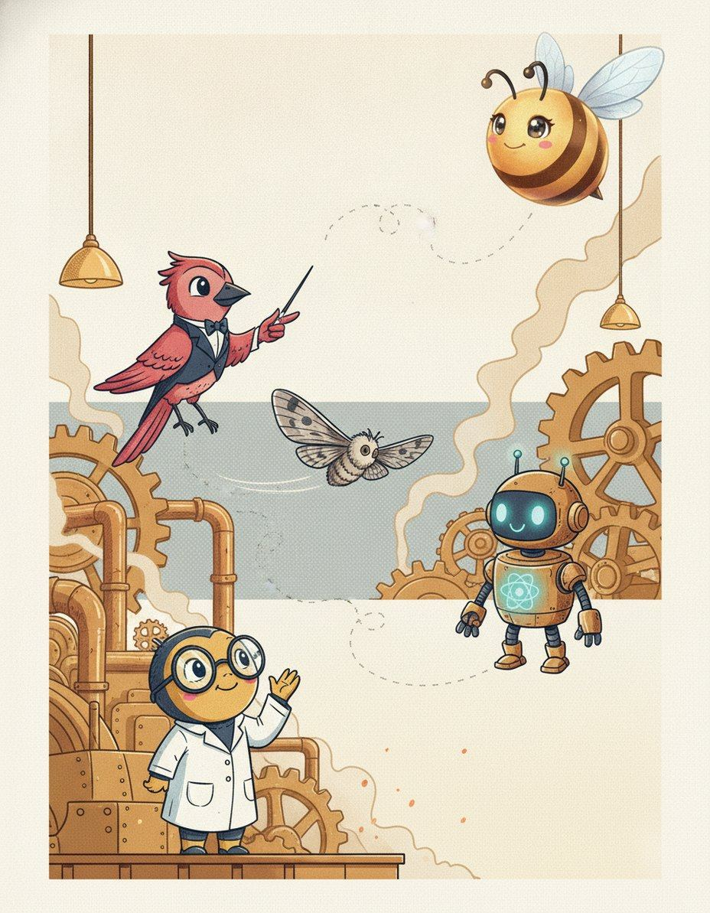
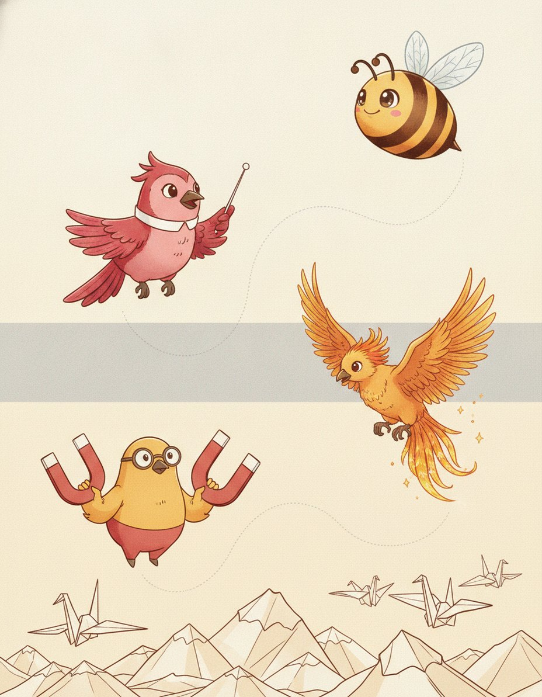
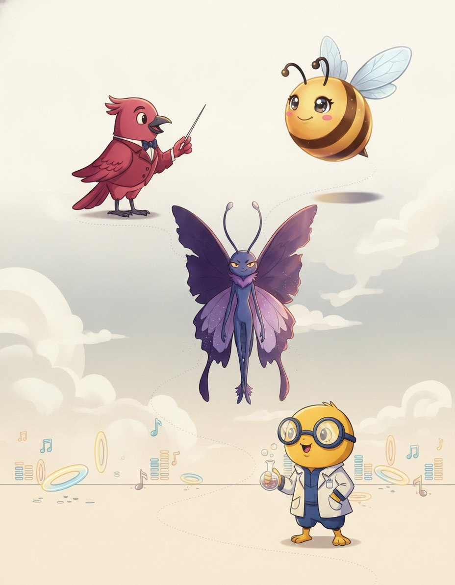
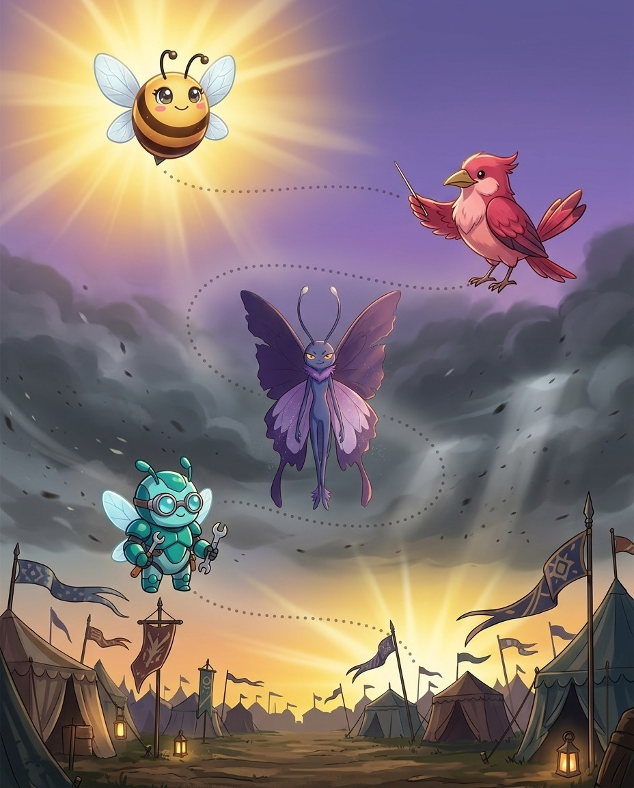

I'm Maestro. How English bolts words together. Nothing in this book is filler — if a page is here, a real speller lost a real word without it.
1
Read the story
Each chapter opens as a storyboard. Vex sets the trap; the crew talks you out of it.
2
Steal the pro move
The dark box is how a champion thinks on stage. It works on brand-new words too.
3
Spell out loud, then write
Say it, spell it aloud, write it. The order matters — it is how the stage will ask for it.
4
Pass the checkpoint
A short quiz on the chapter, gated at 90%. Circle your answers, then verify at the back.
5
Play the game, then revise
Every chapter ends with a fun game, answer key at the back. Revise all words at the end and circle the ones you can spell and define.
Bizzing Bee · The Word Factory1
The Word FactoryThe cast
Bizzy — and this book's guide, Maestro
The crew of Vol. 16
The ensemble for this volume. They host the drills and checkpoints; the work is still yours.
Bizzy — The little bee who spells the world back together, one petal at a time. · Maestro — One wave of the baton and the whole show begins.
Atom
OVR 62
Speller of the Lab
Small but the building block of everything.
Phoenix Flame
OVR 76
Champion of the Lab
Rises brighter from every mistake.
Germy
OVR 63
Speller of the Lab
The tiny troublemaker soap sends packing.
Brainiac
OVR 68
Champion of the Lab
Confidence: 100%. Knows a word for everything.
Scopey
OVR 82
Champion of the Lab
Sees the tiny details everyone else misses.
Magneto Max
OVR 61
Speller of the Lab
Max pulls the right answer straight to him.
Robo Helper
OVR 68
Speller of the Lab
Beep-boop — always ready to help you spell.
Aurum Formula
OVR 88
Grandmaster of the Lab
The golden formula, rarest in the Lab.
And the other one
Vex, the word-moth. Every trap in this book is one it has watched a speller fall into on a real stage.
Bizzing Bee · The Word Factory2
WELCOME TO
The Engine Room
The Engine Room again, belts humming — this is where English bolts words together.
Bizzing Bee · The Word Factory3

1How Words Are Built · the Engine RoomAssimilation — why prefixes change their last letter
BizzyA rule you already half know
MaestroWhy a prefix would change at all
AtomNow the doubled letters make sense
ScopeyFour families to know
♫ narratedturn the page — the whole trick, explained →
4
Chapter 1 · Assimilation — why prefixes change their last…The idea · ★★★
The big idea
The general course teaches this for ad- alone, but the same machinery governs every Latin prefix, and it explains most of the doubled letters in English.
The pro move
IMMARCESCIBLE
Heard. im-ar-SESS-ih-bul — unfading
Parse. in- (not) + marcescere (to wither) + -ible
Assimilation. in- before m becomes im-, so the two m letters are prefix plus root
Spell. I M M A R C E S C I B L E
Family. marcescent — withering, from the same root
The four families
in- meaning not or into becomes im- before b, m, p (impossible, immature), il- before l (illegible, illuminate), ir- before r (irregular, irascible).
This is where doubled letters come from
Almost every awkward double in a Latin-derived word is a prefix meeting a root.
Vex alert
A prefix reshapes its final consonant to match what follows.
Sound trap
immanent sounds like imminent — at the mic, always ask for the meaning.
Check yourself
Book closed: immarcescible · surreptitious · accommodate, out loud, full words. At this level, almost right is still an elimination.
Incapable of withering or fading; not subject to decay or deterioration; everlasting in freshness.
hook: A prefix reshapes its final consonant to match what follows.
The poet called her love ▁▁▁, insisting it would never wither or fade.
surreptitious
/ sur-uh-PTIH-shuhs / · /sʌrəˈptɪʃəs/
marked by quiet and caution and secrecy; taking pains to avoid being observed
hook: A prefix reshapes its final consonant to match what follows.
The spy cast a ▁▁▁ glance over his shoulder before slipping the coded note under the door.
accommodate
/ uh-k-AH-m-uh-d-ay-t / · /əˈkɑməˌdeɪt/
is to do a kindness or a favor to oblige
hook: A prefix reshapes its final consonant to match what follows.
The hotel staff worked hard to ▁▁▁ every guest's special request, arranging extra pillows, dietary meals, and late checkout times to ensure that everyone left feeling comfortable and well cared for.
alliteration
/ uh-LIH-ter-ay-shuhn / · /əˈlɪtəreɪʃən/
use of the same consonant at the beginning of each stressed syllable in a line of verse
hook: A prefix reshapes its final consonant to match what follows.
Poets love ▁▁▁, like 'silly snakes slither swiftly' in a funny rhyme.
corroborate
/ ker-AH-ber-ayt / · /kərˈɑbəreɪt/
establish or strengthen as with new evidence or facts
hook: A prefix reshapes its final consonant to match what follows.
Two other campers stepped forward to ▁▁▁ her story about the shooting star.
commiserate
/ kuh-MIH-ser-ayt / · /kəˈmɪsəreɪt/
to feel or express sympathy or compassion
hook: A prefix reshapes its final consonant to match what follows.
After losing the championship game, the teammates sat together to ▁▁▁ over the tough defeat.
hook: A prefix reshapes its final consonant to match what follows.
The invading army threatened to ▁▁▁ every village in its path, leaving nothing but ash and silence.
irascible
/ ih-r-A-s-ih-b-uh-l / · /ɪrˈæsɪbəl/
is easily provoked to anger
hook: A prefix reshapes its final consonant to match what follows.
The ▁▁▁ old parrot squawked angrily whenever anyone dared touch his cage.
illuminate
/ ih-LOO-mih-niht / · /ɪˈlumɪnɪt/
make lighter or brighter
hook: A prefix reshapes its final consonant to match what follows.
A single lantern was enough to ▁▁▁ the whole tent during our late-night ghost stories.
illegible
/ ih-l-EH-j-uh-b-uh-l / · /ɪlˈɛdʒəbəl/
is hard to read or decipher because of poor handwriting
hook: A prefix reshapes its final consonant to match what follows.
His hurried signature was so ▁▁▁ that no one could read it.
collateral
/ kuh-LA-ter-uhl / · /kəˈlætərəl/
a security pledged for the repayment of a loan
hook: A prefix reshapes its final consonant to match what follows.
Cousins are ▁▁▁ relatives.
corrigible
/ KAW-ruh-juh-buhl / · /ˈkɔrədʒəbəl/
capable of being corrected or set right
hook: A prefix reshapes its final consonant to match what follows.
The school counselor believed every ▁▁▁ student could improve their behavior with the right guidance, patience, and consistent support from both teachers and caring family members at home.
5. use of the same consonant at the beginning of each stressed syllable in a line of…
6. establish or strengthen as with new evidence or facts
7. kill in large numbers
Down
1. make lighter or brighter
3. is to do a kindness or a favor to oblige
Bizzing Bee · The Word Factory10

2How Words Are Built · the Paper MountainsStacking combining forms — how the longest words are …
BizzyLong is not the same as hard
MaestroNever spell left to right
Phoenix FlameThe forty-five letter one
Magneto MaxGreek takes o, Latin takes i
♫ narratedturn the page — the whole trick, explained →
11
Chapter 2 · Stacking combining forms — how the longest wo…The idea · ★★★
The big idea
The longest words in the library are not harder than short ones; they are just longer. They are chains of combining forms, each with a fixed spelling, joined by a connecting vowel — o for Greek, i for Latin. The entire skill is finding the joints.
The pro move
OTORHINOLARYNGOLOGY
Heard. oh-toh-rye-noh-lar-in-GOL-uh-jee
Joints. ot / o / rhin / o / laryng / o / logy
Parts. ous ear, rhis nose, larynx throat, logos study
Spell. O T O R H I N O L A R Y N G O L O G Y
Family. otology, rhinoplasty, laryngitis — every piece reappears
Find the joints first
Never spell a long word left to right. Break it at the connecting vowels first. Otorhinolaryngology becomes ot-o-rhin-o-laryng-o-logy: ear, nose, throat, study.
Greek joins with o, Latin with i
This is the rule that decides the connectors. Greek compounds use o: ochlocracy, myrmecophagy, thermometer, dendrochronology.
Vex alert
Long scientific words are chains of morphemes, not memorised strings.
Check yourself
Book closed: pneumonoultramicroscopicsilicovolcanoconiosis · hippopotomonstrosesquippedaliophobia · floccinaucinihilipilification, out loud, full words. At this level, almost right is still an elimination.
Bizzing Bee · The Word Factory12
Chapter 2 · Stacking combining forms — how the longest wo…Practice · ★★★
A surgical procedure in which the uterus is removed through an incision in the abdominal wall, as opposed to a vaginal hysterectomy. It is one of the most common major gynecological surgeries.
hook: Long scientific words are chains of morphemes, not memorised strings. Greek joins with o, Latin with i.
Following her diagnosis, the surgeon recommended an ▁▁▁ to remove the uterus through an abdominal incision for the safest outcome.
Bizzing Bee · The Word Factory13
Chapter 2 · Stacking combining forms — how the longest wo…Practice · ★★★
The emission of light from a material, such as a crystal or mineral, when it is heated, caused by the release of energy previously stored from exposure to radiation; used in archaeological dating.
hook: Long scientific words are chains of morphemes, not memorised strings. Greek joins with o, Latin with i.
Archaeologists used ▁▁▁ to date the ancient pottery by measuring the light it released when heated.
hook: Long scientific words are chains of morphemes, not memorised strings. Greek joins with o, Latin with i.
Mr. Ortiz accused the class of ▁▁▁ when every book report suddenly sprouted five-syllable vocabulary.
Bizzing Bee · The Word Factory14
Chapter 2 · Stacking combining forms — how the longest wo…Rapid round · ★★★
More ammo — one line each.
dendrochronology/deh-ndroh-kruh-NAH-luh-jee/ the science of dating events and variations in environment in former periods by study of the rings of growth in trees and aged wood.
trichotillomania/trik-oh-til-oh-MAY-nee-uh/ an irresistible urge to pull out your own hair
radioimmunoassay/ray-dee-oh-ih-myoo-noh-AS-ay/ immunoassay of a substance that has been radioactively labeled
zenzizenzizenzic/zen-zee-zen-zee-ZEN-zik/ the eighth power of a number, in old arithmetic books
Lock them in
Pick 4 words from above. Say each one as you write it — three times, no shortcuts. The third copy is the one your hand remembers.
Bizzing Bee · The Word Factory15
Chapter 2 · Stacking combining forms — how the longest wo…Checkpoint · ★★★
Brainiac · Champion of the Lab runs the checkpoint
Do you own the idea?
This checkpoint is gated at 90% — five of six, minimum. Circle, then verify at the back. Brainiac's power is Blink Step — borrow it.
1. What does floccinaucinihilipilification mean?
Athe act of judging something to be completely worthless
Ban irresistible urge to pull out your own hair
Cthe study of drugs that affect the mind
Dthe eighth power of a number, in old arithmetic books
2. What does immunoelectrophoresis mean?
Aa humorous name for the fear of peanut butter sticking to the roof of your mouth
Ban irresistible urge to pull out your own hair
Cthe state of being able to receive honors, famed as Shakespeare's longest word
Delectrophoresis to separate antigens and antibodies
3. Which word fills the gap? “Priya wowed the judges by rattling off ▁▁▁, then joked that the word described her brother's opinion of her music.”
Aradioimmunoassay
Bkakorrhaphiophobia
Cfloccinaucinihilipilification
Darachibutyrophobia
4. Which word belongs to this chapter’s family?
Afloccinaucinihilipilification
Bomnipotent
Cegotist
Drhythm
Dictation round
Hand this page to anyone nearby. They read the words from the answer key (Ch. 2 dictation, at the back) — you write, no peeking.
1.
2.
Bizzing Bee · The Word Factory16
Chapter 2 · Stacking combining forms — how the longest wo…Game · ★★★
Germy's puzzle page
Scramble & rescue
Unscramble
Rescue the vowels
Bizzing Bee · The Word Factory17
3How Words Are Built · the Wide StraitHyphens, spaces and closed compounds
VexA hyphen is a letter
MaestroBorrowed phrases keep their punctuation
GermyThe strangest one in your library
Robo Helperself- is dependable
♫ narratedturn the page — the whole trick, explained →
18
Chapter 3 · Hyphens, spaces and closed compoundsThe idea · ★★★
The big idea
On a bee stage a hyphen is a letter: you have to say it, and getting it wrong loses the word. The rules are conventional rather than logical, but they are learnable. Borrowed French and Italian phrases keep the hyphens they arrived with. The prefix self- always takes one.
The pro move
MILLE-FEUILLE
Heard. meel-FOY — a layered pastry
Origin. French mille feuilles, a thousand leaves
Rule. a borrowed French phrase keeps its hyphen; you must say hyphen aloud
Spell. M I L L E hyphen F E U I L L E
Family. porte-monnaie, carton-pierre — same rule
Say the hyphen
This is the practical point that matters most. At the microphone you spell a hyphenated word by naming it: m-i-l-l-e-hyphen-f-e-u-i-l-l-e.
Borrowed phrases keep their hyphens
French and Italian phrases that entered English as units keep the punctuation they came with.
Vex alert
You must say the hyphen out loud.
Check yourself
Book closed: self-conscious · absent-minded · avant-gardism, out loud, full words. At this level, almost right is still an elimination.
Bizzing Bee · The Word Factory19
Chapter 3 · Hyphens, spaces and closed compoundsPractice · ★★★
Say it. Spell it out loud. Write it.
self-conscious
/ S EH2 L F K AA1 N SH AH0 S / · /ˈsˌɛˌlˌfˌkˌææˌnˌʃˌɑˌs/
aware of yourself as an individual or of your own being and actions and thoughts
hook: You must say the hyphen out loud.
Feeling ▁▁▁ about her braces, she smiled shyly until her friends smiled back.
absent-minded
/ AB-snt-MYN-did / · /ˈæbsntˌmaɪndɪd/
Tending to forget things or not pay attention to what is happening around you because your thoughts are elsewhere; habitually inattentive or forgetful.
hook: You must say the hyphen out loud.
The ▁▁▁ professor walked into class still wearing his pajama top.
avant-gardism
/ ah-vahn-GARD-iz-um / · /ɑvɑnˈɡɑrdɪzʌm/
The philosophy or practice of supporting and creating avant-garde art, ideas, or movements that are experimental, innovative, and ahead of their time.
hook: You must say the hyphen out loud.
Her professor wrote his thesis on ▁▁▁ in 1920s Paris, where artists constantly broke every traditional rule.
porte-monnaie
/ port-moh-NAY / · /pɔrtmoʊˈneɪ/
A small purse or wallet designed specifically for carrying coins; a coin purse, borrowed directly from the French meaning 'carry money.'
hook: You must say the hyphen out loud.
The antique dealer displayed a delicate Victorian ▁▁▁ made of beaded silk, explaining that wealthy ladies once carried such elegant little purses to pay for small purchases.
mezzo-soprano
/ MET-soh-suh-PRAH-noh / · /ˈmɛtsoʊsəˌprɑnoʊ/
a soprano with a voice between soprano and contralto
hook: You must say the hyphen out loud.
The ▁▁▁'s rich, warm voice filled the opera house as she performed the role of the queen.
carton-pierre
/ kar-tohn-PYAIR / · /kɑrtoʊnˈpjɛr/
A type of papier-mâché material made from paper pulp, chalk, and other substances, molded to imitate stone, wood, or metal for decorative architectural purposes.
hook: You must say the hyphen out loud.
The ornate ceiling rosettes in the grand ballroom were crafted from ▁▁▁, fooling every visitor into believing they were solid carved stone.
Bizzing Bee · The Word Factory20
Chapter 3 · Hyphens, spaces and closed compoundsPractice · ★★★
Say it. Spell it out loud. Write it.
mille-feuille
/ meel-FOY / · /milˈfɔɪ/
A classic French pastry made of many thin, flaky layers of puff pastry alternated with cream or custard filling, whose name means 'a thousand leaves' in French.
hook: You must say the hyphen out loud.
The French bakery's ▁▁▁ had hundreds of flaky layers stacked with cream and fresh strawberries.
privat-docent
/ prih-VAHT-doh-sent / · /prɪˈvɑtdoʊsɛnt/
In European universities, especially in German-speaking countries, an unsalaried lecturer who is qualified to teach at a university level and earns fees directly from students attending lectures.
hook: You must say the hyphen out loud.
The ▁▁▁ lectured at the university without receiving an official salary, relying solely on student fees.
hsaing-waing
/ SAING-waing / · /ˈsæɪŋwæɪŋ/
A traditional Burmese percussion ensemble centered around a circle of tuned drums, used to accompany classical dance, theater, and ceremonial performances in Myanmar.
hook: You must say the hyphen out loud.
The ceremonial procession was led by musicians playing the ▁▁▁, Burma's traditional drum circle ensemble.
loup-garou
/ loo-gah-ROO / · /luɡɑˈru/
a monster able to change appearance from human to wolf and back again
hook: You must say the hyphen out loud.
The villagers bolted their doors at night, terrified that the ▁▁▁ prowling the forest would find its way into town.
hunky-dory
/ HUNK-ee-DOR-ee / · /ˈhʌnkiˌdɔri/
being satisfactory or in satisfactory condition
hook: You must say the hyphen out loud.
After the repairs were finished, the mechanic assured us that everything was ▁▁▁ with the engine.
cul-de-sac
/ K AH1 L D IH0 S AE2 K / · /ˈkˌɑˌlˌdˌɪˌsˌæɛˌk/
a passage with access only at one end
hook: You must say the hyphen out loud.
The children played safely in the ▁▁▁ because no through traffic ever came down the dead-end street.
Bizzing Bee · The Word Factory21
Chapter 3 · Hyphens, spaces and closed compoundsCheckpoint · ★★★
Scopey · Champion of the Lab runs the checkpoint
Do you own the idea?
This checkpoint is gated at 90% — five of six, minimum. Circle, then verify at the back. Scopey's power is Mind Palace — borrow it.
1. What does porte-monnaie mean?
Aa monster able to change appearance from human to wolf and back again
Ba soprano with a voice between soprano and contralto
Caware of yourself as an individual or of your own being and actions and thoughts
DA small purse or wallet designed specifically for carrying coins; a coin purse, borrowed directly from the French meaning 'carry money.'
2. What does self-conscious mean?
Abeing satisfactory or in satisfactory condition
Ba monster able to change appearance from human to wolf and back again
Caware of yourself as an individual or of your own being and actions and thoughts
Da passage with access only at one end
3. Which spelling is correct?
Acarton-pierre
Bcarton-piere
Ccarton-peirre
Dcerton-pierre
4. Which word fills the gap? “Her professor wrote his thesis on ▁▁▁ in 1920s Paris, where artists constantly broke every traditional rule.”
Ahunky-dory
Bporte-monnaie
Cavant-gardism
Dmille-feuille
Dictation round
Hand this page to anyone nearby. They read the words from the answer key (Ch. 3 dictation, at the back) — you write, no peeking.
1.
2.
Bizzing Bee · The Word Factory22
Chapter 3 · Hyphens, spaces and closed compoundsGame · ★★★
Brainiac's puzzle page
Scramble & rescue
Unscramble
Rescue the vowels
Bizzing Bee · The Word Factory23
4How Words Are Built · the Word JunkyardDoublets — one root, two arrivals, two spellings
BizzyThe same word, borrowed twice
MaestroWorn down or taken fresh
Brainiacc in the north, ch in Paris
Aurum Formulaw in the north, gu in Paris
♫ narratedturn the page — the whole trick, explained →
24
Chapter 4 · Doublets — one root, two arrivals, two spelli…The idea · ★★★
The big idea
English borrowed from French for six hundred years, and French itself changed during that time — so the same Latin root frequently arrived twice, at different dates, wearing different clothes. These pairs are called doublets, and they explain a great deal that otherwise looks random.
The pro move
CHATTEL
Heard. CHAT-ul — a movable possession
Doublet. cattle is the same Latin word, capitale, meaning property
Rule. Parisian French turned Latin c into ch, so cattle and chattel split
Spell. C H A T T E L
Family. capital, cattle, chattel — all from capitale
The w and gu pairs
Norman French kept a Germanic w; Parisian French wrote gu instead. So English got both. Ward and guard. Warranty and guarantee. Wile and guile. Warden and guardian. Wallop and gallop.
The c and ch pairs
Latin c before a became ch in Parisian French and stayed c in Norman. Cattle and chattel, from capitale. Catch and chase, from captiare. Cap and chief and chef, all from caput, a head.
Vex alert
The same Latin word often entered English twice: once through Norman French with a w or a hard c
Sound trap
guarantee sounds like guaranty · wile sounds like while — at the mic, always ask for the meaning.
Check yourself
Book closed: chattel · guarantee · warranty, out loud, full words. At this level, almost right is still an elimination.
Bizzing Bee · The Word Factory25
Chapter 4 · Doublets — one root, two arrivals, two spelli…Practice · ★★★
Say it. Spell it out loud. Write it.
chattel
/ ch-A-t-uh-l / · /tʃˈætəl/
a movable item of personal property
hook: The same Latin word often entered English twice: once through Norman French with a w or a hard c
In the historical novel, the characters debate whether a person could ever rightfully be treated as ▁▁▁.
guarantee
/ geh-ruh-NTEE / · /ɡɛrəˈnti/
a written assurance that some product or service will be provided or will meet certain specifications
hook: The same Latin word often entered English twice: once through Norman French with a w or a hard c
There is no ▁▁▁ that they are not lying.
warranty
/ w-AW-r-uh-n-t-ee / · /wˈɔrənti/
is assurance
hook: The same Latin word often entered English twice: once through Norman French with a w or a hard c
When the new laptop stopped working after a week, Mom used the ▁▁▁ to get it replaced for free.
fragile
/ FRA-juhl / · /ˈfrædʒəl/
easily broken or damaged or destroyed
hook: The same Latin word often entered English twice: once through Norman French with a w or a hard c
The archaeologist handled the ▁▁▁ pottery shard with two fingers, knowing that a single wrong move could destroy a 3,000-year-old artifact.
genteel
/ jehn-TEEL / · /dʒɛnˈtil/
marked by refinement in taste and manners
hook: The same Latin word often entered English twice: once through Norman French with a w or a hard c
Despite living in a tiny apartment, the elderly woman maintained a ▁▁▁ lifestyle, always setting the table with her finest china for guests.
tradition
/ truh-DIH-shuhn / · /trəˈdɪʃən/
an inherited pattern of thought or action
hook: The same Latin word often entered English twice: once through Norman French with a w or a hard c
Lighting candles at dinner was a beloved family ▁▁▁ passed down for four generations.
Bizzing Bee · The Word Factory26
Chapter 4 · Doublets — one root, two arrivals, two spelli…Practice · ★★★
Say it. Spell it out loud. Write it.
treason
/ TREE-zuhn / · /ˈtrizən/
a crime that undermines the offender's government
hook: The same Latin word often entered English twice: once through Norman French with a w or a hard c
The general was arrested and charged with ▁▁▁ after he plotted against his own country.
regard
/ rih-GARD / · /rɪˈɡɑrd/
To think of or consider someone or something in a certain way
hook: The same Latin word often entered English twice: once through Norman French with a w or a hard c
Everyone in class ▁▁▁ Maya as the best artist in fourth grade.
guard
/ GAHRD / · /ˈɡɑrd/
a person who keeps watch over something or someone
hook: The same Latin word often entered English twice: once through Norman French with a w or a hard c
The left ▁▁▁ was injured on the play.
ward
/ WAWRD / · /ˈwɔrd/
a person who is under the protection or in the custody of another
hook: The same Latin word often entered English twice: once through Norman French with a w or a hard c
They put her in a 4-bed ▁▁▁.
chief
/ CHEEF / · /ˈtʃif/
a person who is in charge
hook: The same Latin word often entered English twice: once through Norman French with a w or a hard c
chef
/ SHEHF / · /ˈʃɛf/
a professional cook
hook: The same Latin word often entered English twice: once through Norman French with a w or a hard c
The talented ▁▁▁ created a magnificent five-course dinner that left every guest at the table speechless.
Bizzing Bee · The Word Factory27
Chapter 4 · Doublets — one root, two arrivals, two spelli…Rapid round · ★★★
More ammo — one line each.
frail/FRAYL/ Weak, delicate, and easily broken or hurt.
cattle/KA-tuhl/ domesticated bovine animals as a group regardless of sex or age
reward/rih-WAWRD/ a recompense for worthy acts or retribution for wrongdoing
wile/WEYEL/ the use of tricks to deceive someone (usually to extract money from them)
guile/GEYEL/ shrewdness as demonstrated by being skilled in deception
catch/KACH/ a drawback or difficulty that is not readily evident
chase/CHAYS/ the act of pursuing in an effort to overtake or capture
royal/ROY-uhl/ belonging to or having to do with a king or queen
regal/REE-guhl/ belonging to or befitting a supreme ruler
gentle/JEH-ntuhl/ cause to be more favorably inclined; gain the good will of
poison/POY-zuhn/ any substance that causes injury or illness or death of a living organism
potion/POH-shuhn/ a medicinal or magical or poisonous beverage
secure/sih-KYUUR/ get by special effort
sure/SHUUR/ having or feeling no doubt or uncertainty; confident and assured
Lock them in
Pick 4 words from above. Say each one as you write it — three times, no shortcuts. The third copy is the one your hand remembers.
Bizzing Bee · The Word Factory28
Chapter 4 · Doublets — one root, two arrivals, two spelli…Rapid round · ★★★
More ammo — one line each.
hostel/HAH-stuhl/ a hotel providing overnight lodging for travelers
hotel/hoh-TEHL/ a building where travelers can pay for lodging and meals and other services
corps/KAWR/ an army unit usually consisting of two or more divisions and their support
shirt/SHURT/ a garment worn on the upper half of the body
skirt/SKURT/ cloth covering that forms the part of a garment below the waist
shatter/SHA-ter/ break into many pieces
scatter/SKA-ter/ a haphazard distribution in all directions
Lock them in
Pick 4 words from above. Say each one as you write it — three times, no shortcuts. The third copy is the one your hand remembers.
Bizzing Bee · The Word Factory29
Chapter 4 · Doublets — one root, two arrivals, two spelli…Checkpoint · ★★★
Magneto Max · Speller of the Lab runs the checkpoint
Do you own the idea?
This checkpoint is gated at 90% — five of six, minimum. Circle, then verify at the back. Magneto Max's power is Ice Cool — borrow it.
1. What does secure mean?
Aget by special effort
Ba building where travelers can pay for lodging and meals and other services
CWeak, delicate, and easily broken or hurt.
Da written assurance that some product or service will be provided or will meet certain specifications
2. What does regal mean?
Aany substance that causes injury or illness or death of a living organism
Bthe use of tricks to deceive someone (usually to extract money from them)
Ca person who is under the protection or in the custody of another
Dbelonging to or befitting a supreme ruler
3. Which spelling is correct?
Aginteel
Bgenteel
Cgennteel
Dgentel
4. Which word fills the gap? “The general was arrested and charged with ▁▁▁ after he plotted against his own country.”
Atreason
Bwile
Creward
Dregard
5. Which word belongs to this chapter’s family?
Ainfinitesimal
Bextemporaneous
Csecure
Ddiction
Dictation round
Hand this page to anyone nearby. They read the words from the answer key (Ch. 4 dictation, at the back) — you write, no peeking.
1.
2.
Bizzing Bee · The Word Factory30
Chapter 4 · Doublets — one root, two arrivals, two spelli…Game · ★★★
Scopey's puzzle page
Crossword
1
2
3
4
5
6
7
8
Across
5. a written assurance that some product or service will be provided or will meet…
7. is assurance
8. a person who keeps watch over something or someone
Down
1. marked by refinement in taste and manners
2. a movable item of personal property
3. easily broken or damaged or destroyed
4. an inherited pattern of thought or action
6. To think of or consider someone or something in a certain way
Bizzing Bee · The Word Factory31

5How Words Are Built · the VibeHeteronyms — same spelling, two pronunciations
BizzyThe mirror image of a homophone
MaestroThe strategy at the mic
VexThe genuinely different words
GlitchThe -ate family
♫ narratedturn the page — the whole trick, explained →
32
Chapter 5 · Heteronyms — same spelling, two pronunciationsThe idea · ★★★
The big idea
Heteronyms are the mirror image of homophones: same spelling, different sound and sense. They matter on a bee stage for one specific reason — the pronunciation you are given may not match the word you are thinking of, and the fix is to ask for the part of speech and the definition.
The pro move
SEPARATE
Heard. SEP-uh-rut (adjective) or SEP-uh-rate (verb)
Same spelling. both are s-e-p-a-r-a-t-e
Strategy. the pronunciation differs but the spelling does not — so relax, and confirm the definition anyway
Spell. S E P A R A T E
Family. separation, separately
The stress rule
For dozens of two-syllable pairs, the noun stresses the first syllable and the verb the second. CON-duct the noun, con-DUCT the verb. RE-cord and re-CORD. PRO-ject and pro-JECT. SUB-ject and sub-JECT.
The -ate words
A large family of words ending -ate has a full vowel as a verb and a reduced one as an adjective or noun. SEP-uh-rate the verb against SEP-uh-rut the adjective.
Vex alert
One spelling, two words.
Sound trap
tear sounds like tier · bow sounds like bough — at the mic, always ask for the meaning.
Check yourself
Book closed: separate · moderate · deliberate, out loud, full words. At this level, almost right is still an elimination.
Bizzing Bee · The Word Factory33
Chapter 5 · Heteronyms — same spelling, two pronunciationsPractice · ★★★
Say it. Spell it out loud. Write it.
separate
/ SEH-per-ayt / · /ˈsɛpəreɪt/
a separately printed article that originally appeared in a larger publication
hook: One spelling, two words. Stress usually marks the difference: a noun stresses the first syllable, a verb the second.
Our teacher passed around a ▁▁▁, a single article reprinted from the big journal.
moderate
/ MAH-der-uht / · /ˈmɑdərət/
a person who takes a position in the political center
hook: One spelling, two words. Stress usually marks the difference: a noun stresses the first syllable, a verb the second.
John ▁▁▁ the discussion.
deliberate
/ dih-LIH-ber-uht / · /dɪˈlɪbərət/
think about carefully; weigh
hook: One spelling, two words. Stress usually marks the difference: a noun stresses the first syllable, a verb the second.
Take a moment to ▁▁▁ carefully before choosing which experiment to present at the fair.
intimate
/ IH-ntuh-muht / · /ˈɪntəmət/
someone to whom private matters are confided
hook: One spelling, two words. Stress usually marks the difference: a noun stresses the first syllable, a verb the second.
She shared her secret plan only with her most ▁▁▁ friend.
laminate
/ LA-muh-nuht / · /ˈlæmənət/
a sheet of material made by bonding two or more sheets or layers
hook: One spelling, two words. Stress usually marks the difference: a noun stresses the first syllable, a verb the second.
The teacher ▁▁▁ the colorful classroom posters so they would last through the entire school year without tearing.
alternate
/ AW-lter-nuht / · /ˈɔltərnət/
someone who takes the place of another person
hook: One spelling, two words. Stress usually marks the difference: a noun stresses the first syllable, a verb the second.
When the lead actress fell ill, her ▁▁▁ stepped onto the stage and delivered a stunning performance.
Bizzing Bee · The Word Factory34
Chapter 5 · Heteronyms — same spelling, two pronunciationsPractice · ★★★
Say it. Spell it out loud. Write it.
appropriate
/ uh-PROH-pree-uht / · /əˈproʊpriət/
give or assign a resource to a particular person or cause
hook: One spelling, two words. Stress usually marks the difference: a noun stresses the first syllable, a verb the second.
The mayor decided to ▁▁▁ part of the budget to build a new playground.
associate
/ uh-SOH-see-uht / · /əˈsoʊsiət/
a person who joins with others in some activity or endeavor
hook: One spelling, two words. Stress usually marks the difference: a noun stresses the first syllable, a verb the second.
He had to consult his ▁▁▁ before continuing.
estimate
/ EH-stuh-muht / · /ˈɛstəmət/
an approximate calculation of quantity or degree or worth
hook: One spelling, two words. Stress usually marks the difference: a noun stresses the first syllable, a verb the second.
The contractor gave the homeowners a detailed ▁▁▁ showing that repairing the roof would cost approximately four thousand dollars.
graduate
/ g-r-A-j-uh-w-uh-t / · /ˈɡrædʒəwət/
one that has received an academic degree a diploma or a certificate
hook: One spelling, two words. Stress usually marks the difference: a noun stresses the first syllable, a verb the second.
She ▁▁▁ in 1990.
predicate
/ PREH-duh-kayt / · /ˈprɛdəkeɪt/
in logic, the part of a statement that tells something about the subject
hook: One spelling, two words. Stress usually marks the difference: a noun stresses the first syllable, a verb the second.
`Socrates is a man' ▁▁▁ manhood of Socrates.
syndicate
/ SIH-ndih-kuht / · /ˈsɪndɪkət/
a loose affiliation of gangsters in charge of organized criminal activities
hook: One spelling, two words. Stress usually marks the difference: a noun stresses the first syllable, a verb the second.
In the mystery novel, brave detectives worked to expose the crime ▁▁▁ in the city.
Bizzing Bee · The Word Factory35
Chapter 5 · Heteronyms — same spelling, two pronunciationsRapid round · ★★★
More ammo — one line each.
present/PREH-zuhnt/ A gift given to someone, often for a birthday, holiday, or special achievement.
minute/my-NOOT/ Extremely small; tiny.
august/AH-guhst/ the month following July and preceding September
invalid/IH-nvuh-luhd/ someone who is incapacitated by a chronic illness or injury
conduct/KAH-nduhkt/ manner of acting or controlling yourself
refuse/ruh-FYOOZ/ food that is discarded (as from a kitchen)
produce/pruh-DOOS/ fresh fruits and vegetable grown for the market
content/KAH-ntehnt/ everything that is included in a collection and that is held or included in something
object/AH-bjehkt/ a tangible and visible entity; an entity that can cast a shadow
subject/suh-BJEHKT/ The topic or thing that people are talking, writing, or learning about.
project/PRAH-jehkt/ any piece of work that is undertaken or attempted
record/ruh-KAWRD/ information kept or saved so people can remember what happened
polish/PAH-lihsh/ the property of being smooth and shiny
tear/TEHR/ a drop of the clear salty saline solution secreted by the lacrimal glands
Lock them in
Pick 4 words from above. Say each one as you write it — three times, no shortcuts. The third copy is the one your hand remembers.
Bizzing Bee · The Word Factory36
Chapter 5 · Heteronyms — same spelling, two pronunciationsRapid round · ★★★
More ammo — one line each.
wind/WEYEND/ air moving (sometimes with considerable force) from an area of high pressure to an area of low pressure
bow/b-OW/ a knot formed by doubling a string into two loops
sow/SOW/ an adult female hog
lead/LEED/ To guide people or show the way.
live/LEYEV/ To be alive; not dead; having life or existence as opposed to being deceased or inanimate.
close/KLOHS/ the temporal end; the concluding time
dove/DUHV/ any of numerous small pigeons
wound/WOWND/ an injury to living tissue (especially an injury involving a cut or break in the skin)
Lock them in
Pick 4 words from above. Say each one as you write it — three times, no shortcuts. The third copy is the one your hand remembers.
Bizzing Bee · The Word Factory37
Chapter 5 · Heteronyms — same spelling, two pronunciationsCheckpoint · ★★★
Robo Helper · Speller of the Lab runs the checkpoint
Do you own the idea?
This checkpoint is gated at 90% — five of six, minimum. Circle, then verify at the back. Robo Helper's power is Fast Forward — borrow it.
1. What does appropriate mean?
Aa sheet of material made by bonding two or more sheets or layers
Bany of numerous small pigeons
Ca person who takes a position in the political center
Dgive or assign a resource to a particular person or cause
2. What does project mean?
Aa person who takes a position in the political center
Bany piece of work that is undertaken or attempted
Csomeone to whom private matters are confided
Dgive or assign a resource to a particular person or cause
3. Which spelling is correct?
Atearr
Btear
Cteer
Dtiar
4. Which word fills the gap? “The mayor decided to ▁▁▁ part of the budget to build a new playground.”
Aestimate
Brecord
Cappropriate
Dconduct
5. Which word belongs to this chapter’s family?
Adistraught
Bmetamorphosis
Cfantastic
Dappropriate
Dictation round
Hand this page to anyone nearby. They read the words from the answer key (Ch. 5 dictation, at the back) — you write, no peeking.
1.
2.
Bizzing Bee · The Word Factory38
Chapter 5 · Heteronyms — same spelling, two pronunciationsGame · ★★★
6How Words Are Built · the Big StageMetathesis — the sounds that swapped places
BizzySounds that trade places
MaestroNostril is nose plus hole
VexThe swaps happening now
AtomThrough and thorough
♫ narratedturn the page — the whole trick, explained →
40
Chapter 6 · Metathesis — the sounds that swapped placesThe idea · ★★★
The big idea
Metathesis is the swapping of two sounds within a word, and it is one of the commonest ways English spellings drift away from their origins. It happens most around r and l. Sometimes the swap won and became the standard spelling, which is why some words look scrambled compared to their relatives.
The pro move
NOSTRIL
Heard. NOSS-trul
Origin. Old English nosthyrl — nose plus thyrel, a hole
What happened. the th and the r traded places and the word compressed
Spell. N O S T R I L
Family. nose, thrill — thrill is the same thyrel, meaning to pierce
Swaps that won
Old English bridd became bird. thridda became third. hros became horse. Old English wæps became wasp. hæps became hasp. And nosthyrl became nostril.
Doublets made by metathesis
Sometimes both orders survived as separate words. Through and thorough are the same Old English word, thurh, with different vowel and stress development.
Vex alert
Two sounds trade places over time, usually around an r.
Sound trap
through sounds like threw · bird sounds like birred, burred — at the mic, always ask for the meaning.
Check yourself
Book closed: nostril · thorough · through, out loud, full words. At this level, almost right is still an elimination.
Bizzing Bee · The Word Factory41
Chapter 6 · Metathesis — the sounds that swapped placesPractice · ★★★
Say it. Spell it out loud. Write it.
nostril
/ NAH-strihl / · /ˈnɑstrɪl/
either one of the two external openings to the nasal cavity in the nose
hook: Two sounds trade places over time, usually around an r.
The horse flared its ▁▁▁ and snorted loudly as the stranger approached.
thorough
/ THUR-oh / · /ˈθʌroʊ/
painstakingly careful and accurate
hook: Two sounds trade places over time, usually around an r.
Our accountant is ▁▁▁.
through
/ THROO / · /ˈθru/
having finished or arrived at completion
hook: Two sounds trade places over time, usually around an r.
comfortable
/ KUH-mfer-tuh-buhl / · /ˈkʌmfərtəbəl/
providing or experiencing physical well-being or relief (`comfy' is informal)
hook: Two sounds trade places over time, usually around an r.
After hiking through the muddy trail for six exhausting hours, the campers were finally ▁▁▁ sitting beside the warm fire, wrapped in dry blankets and sipping hot cocoa.
integral
/ IH-ntuh-gruhl / · /ˈɪntəɡrəl/
In math, the total found by adding up many tiny parts; the reverse of a derivative.
hook: Two sounds trade places over time, usually around an r.
Practice is an ▁▁▁ part of becoming skilled at any instrument.
nuclear
/ NOO-klee-er / · /ˈnukliər/
(weapons) deriving destructive energy from the release of atomic energy
hook: Two sounds trade places over time, usually around an r.
Scientists debated whether ▁▁▁ energy could serve as a safe and reliable alternative to fossil fuels, given both its enormous power output and the serious risks posed by radioactive waste.
Bizzing Bee · The Word Factory42
Chapter 6 · Metathesis — the sounds that swapped placesPractice · ★★★
Say it. Spell it out loud. Write it.
interpret
/ ih-NTUR-pruht / · /ɪˈntʌrprət/
make sense of; assign a meaning to
hook: Two sounds trade places over time, usually around an r.
Can you ▁▁▁ what the poet meant by 'the dancing leaves'?
asterisk
/ A-ster-ihsk / · /ˈæstərɪsk/
a star-shaped character * used in printing
hook: Two sounds trade places over time, usually around an r.
A small ▁▁▁ beside the word pointed me to the note at the bottom.
cavalry
/ KA-vuh-lree / · /ˈkævəlri/
troops trained to fight on horseback
hook: Two sounds trade places over time, usually around an r.
espresso
/ eh-SPREH-soh / · /ɛˈsprɛsoʊ/
strong black coffee brewed by forcing hot water under pressure through finely ground coffee beans
hook: Two sounds trade places over time, usually around an r.
The barista carefully pulled a perfect shot of ▁▁▁, the dark liquid flowing thick and rich into the tiny cup.
sherbet
/ SHUR-buht / · /ˈʃʌrbət/
a frozen dessert made primarily of fruit juice and sugar, but also containing milk or egg-white or gelatin
hook: Two sounds trade places over time, usually around an r.
The bright orange ▁▁▁ tasted like a creamy blend of tangerines and vanilla on a sweltering July afternoon.
jewelry
/ JOO-uh-lree / · /ˈdʒuəlri/
an adornment (as a bracelet or ring or necklace) made of precious metals and set with gems (or imitation gems)
hook: Two sounds trade places over time, usually around an r.
She kept her grandmother's ▁▁▁ in a velvet-lined box on her dresser.
Bizzing Bee · The Word Factory43
Chapter 6 · Metathesis — the sounds that swapped placesRapid round · ★★★
More ammo — one line each.
spaghetti/s-p-uh-g-EH-t-ee/ a white starchy pasta of Italian origin
tremble/TREH-mbuhl/ a reflex motion caused by cold or fear or excitement
tinsel/TIH-nsuhl/ a showy decoration that is basically valueless
modern/MAH-dern/ a contemporary person
hundred/HUH-ndruhd/ the number equal to ten times ten, written 100
fringe/FRIHNJ/ the outside boundary or surface of something
wasp/WAHSP/ a white person of Anglo-Saxon ancestry who belongs to a Protestant denomination
hasp/HASP/ a fastener for a door or lid; a hinged metal plate is fitted over a staple and is locked with a pin or padlock
clasp/KLASP/ a fastener (as a buckle or hook) that is used to hold two things together
grasp/GRASP/ understanding of the nature or meaning or quality or magnitude of something
curd/KURD/ the soft, white lumps that form when milk thickens or sours
crud/KRUHD/ heavy wet snow that is unsuitable for skiing
bird/BURD/ warm-blooded egg-laying vertebrates characterized by feathers and forelimbs modified as wings
third/THURD/ one of three equal parts of a divisible whole
Lock them in
Pick 4 words from above. Say each one as you write it — three times, no shortcuts. The third copy is the one your hand remembers.
Bizzing Bee · The Word Factory44
Chapter 6 · Metathesis — the sounds that swapped placesRapid round · ★★★
More ammo — one line each.
pretty/PRIH-tee/ pleasing by delicacy or grace; not imposing
Lock them in
Pick 1 words from above. Say each one as you write it — three times, no shortcuts. The third copy is the one your hand remembers.
Bizzing Bee · The Word Factory45
Chapter 6 · Metathesis — the sounds that swapped placesCheckpoint · ★★★
Aurum Formula · Grandmaster of the Lab runs the checkpoint
Do you own the idea?
This checkpoint is gated at 90% — five of six, minimum. Circle, then verify at the back. Aurum Formula's power is Ice Cool — borrow it.
1. What does cavalry mean?
Atroops trained to fight on horseback
Ba fastener (as a buckle or hook) that is used to hold two things together
Cpleasing by delicacy or grace; not imposing
Dhaving finished or arrived at completion
2. What does tinsel mean?
Awarm-blooded egg-laying vertebrates characterized by feathers and forelimbs modified as wings
Bhaving finished or arrived at completion
C(weapons) deriving destructive energy from the release of atomic energy
Da showy decoration that is basically valueless
3. Which word fills the gap? “All the ▁▁▁ of self-promotion.”
Anostril
Bnuclear
Ctinsel
Dpretty
4. Which word belongs to this chapter’s family?
Aabscond
Bonslaught
Cberserk
Dcavalry
Dictation round
Hand this page to anyone nearby. They read the words from the answer key (Ch. 6 dictation, at the back) — you write, no peeking.
1.
2.
3.
Bizzing Bee · The Word Factory46
Chapter 6 · Metathesis — the sounds that swapped placesGame · ★★★
Robo Helper's puzzle page
Scramble & rescue
Unscramble
tsinrlo
hrdit
thhgoour
ohrtuhg
durc
mleertb
Rescue the vowels
m_d_rn
sh_rb_t
pr_tty
cr_d
c_rd
tr_mbl_
Bizzing Bee · The Word Factory47

7How Words Are Built · the Proving GroundClipping, blending, back-formation, reduplication
BizzyEnglish manufactures words
MaestroWhy the method matters
VexBack-formation invents a root
Phoenix FlameReduplication has a vowel rule
♫ narratedturn the page — the whole trick, explained →
48
Chapter 7 · Clipping, blending, back-formation, reduplica…The idea · ★★★
The big idea
Not every word is inherited. English manufactures words, and it does so in four recognisable ways. Clipping cuts a long word short. Blending fuses two words into one. Back-formation invents a shorter word by removing an ending that was never a suffix at all.
The pro move
CHORTLE
Heard. CHOR-tul — to laugh with glee
Origin. a blend of chuckle and snort, invented by Lewis Carroll
Rule. a blend keeps the start of the first word and the end of the second
Spell. C H O R T L E
Family. galumph — Carroll's other surviving blend
Clipping
Cut a long word short and keep the spelling of the part you kept. Flu from influenza, so it is f-l-u with no e.
Blending
Fuse two words and keep the front of one and the back of the other. Brunch from breakfast and lunch. Smog from smoke and fog. Motel from motor and hotel. Chortle from chuckle and snort.
Vex alert
Four ways English makes short words: cut one down
Sound trap
burger sounds like burgher · flu sounds like flew, flue — at the mic, always ask for the meaning.
Check yourself
Book closed: infomercial · workaholic · staycation, out loud, full words. At this level, almost right is still an elimination.
6. a television commercial presented in the form of a short documentary
7. a small inexpensive mass-produced article
8. a soft
9. a representation of a facial expression (as a smile or frown) created by typing a…
Down
1. person with a compulsive need to work
2. a swindle in which you cheat at gambling or persuade a person to buy worthless…
5. often involving leisure activities close to home
Bizzing Bee · The Word Factory55
8How Words Are Built · the Grey SeaFolk etymology — wrong guesses that became correct
BizzyWrong guesses that became law
MaestroColeslaw and hangnail
VexThe s in island is a mistake
GermyThe bridegroom has no groom
♫ narratedturn the page — the whole trick, explained →
56
Chapter 8 · Folk etymology — wrong guesses that became co…The idea · ★★★
The big idea
When a borrowed or archaic word contained an element speakers no longer understood, they reshaped it to resemble something familiar — and often the reshaping stuck and became the dictionary spelling.
The pro move
ISLAND
Heard. EYE-lund
Origin. Old English igland — ig meant island already, land was added
What happened. the s was inserted by scribes copying French isle, from Latin insula
Verdict. the s is a mistake that became compulsory
Spell. I S L A N D
Letters inserted by mistake
Island had no s: Old English igland was respelled to match French isle. Could had no l: Old English cuthe gained one by analogy with should and would.
Words reshaped to look familiar
Bridegroom was Old English brydguma, bride-man — guma meant man, and when that word died English replaced it with groom, which then meant a boy.
Vex alert
When a word stopped making sense, English respelled it to look like words it did recognise.
Sound trap
carat sounds like caret, carrot · chaise sounds like shays — at the mic, always ask for the meaning.
Check yourself
Book closed: bridegroom · posthumous · curmudgeon, out loud, full words. At this level, almost right is still an elimination.
Bizzing Bee · The Word Factory57
Chapter 8 · Folk etymology — wrong guesses that became co…Practice · ★★★
Say it. Spell it out loud. Write it.
bridegroom
/ BREYE-dgroom / · /ˈbraɪdɡrum/
a man who has recently been married
hook: When a word stopped making sense, English respelled it to look like words it did recognise.
The nervous ▁▁▁ smiled with relief when he finally saw his partner walking down the aisle.
posthumous
/ p-AH-s-ch-uh-m-uh-s / · /ˈpɑstʃʊməs/
is arising occurring or continuing after one's death
hook: When a word stopped making sense, English respelled it to look like words it did recognise.
The soldier's ▁▁▁ medal of honor was presented to his tearful daughter at a solemn ceremony, recognizing the extraordinary courage he had shown during his final mission overseas.
curmudgeon
/ k-ur-m-UH-j-ih-n / · /kʌrmˈʌdʒɪn/
a crusty, irascible, cantankerous old person full of stubborn ideas
hook: When a word stopped making sense, English respelled it to look like words it did recognise.
The old ▁▁▁ next door shouted at every child who dared to cut across his perfectly manicured lawn.
liquorice
/ LIK-er-ish / · /ˈlɪkərɪʃ/
deep-rooted coarse-textured plant native to the Mediterranean region having blue flowers and pinnately compound leaves; widely cultivated in Europe for its long thick sweet roots
hook: When a word stopped making sense, English respelled it to look like words it did recognise.
The old-fashioned candy shop sold twisted ropes of black ▁▁▁ that made your tongue turn dark.
asparagus
/ uh-SPEH-ruh-guhs / · /əˈspɛrəɡəs/
plant whose succulent young shoots are cooked and eaten as a vegetable
hook: When a word stopped making sense, English respelled it to look like words it did recognise.
Mom roasted the ▁▁▁ with olive oil and garlic until the tips were slightly crispy and the stalks were tender.
rosemary
/ ROH-zmeh-ree / · /ˈroʊzmɛri/
widely cultivated for its fragrant grey-green leaves used in cooking and in perfumery
hook: When a word stopped making sense, English respelled it to look like words it did recognise.
She added a sprig of ▁▁▁ to the roasted chicken to give it a rich, herbal flavor.
Bizzing Bee · The Word Factory58
Chapter 8 · Folk etymology — wrong guesses that became co…Practice · ★★★
Say it. Spell it out loud. Write it.
cockroach
/ KAH-krohch / · /ˈkɑkroʊtʃ/
any of numerous chiefly nocturnal insects; some are domestic pests
hook: When a word stopped making sense, English respelled it to look like words it did recognise.
A single ▁▁▁ scurried across the kitchen floor and disappeared behind the refrigerator.
penthouse
/ PEH-nthows / · /ˈpɛnθaʊs/
an apartment located on the top floors of a building
hook: When a word stopped making sense, English respelled it to look like words it did recognise.
The wealthy architect designed a stunning ▁▁▁ with floor-to-ceiling windows overlooking the entire city skyline.
hangnail
/ HANG-nayl / · /ˈhæŋneɪl/
a loose narrow strip of skin near the base of a fingernail; tearing it produces a painful sore that is easily infected
hook: When a word stopped making sense, English respelled it to look like words it did recognise.
She winced as she accidentally tore the ▁▁▁ on her thumb.
coleslaw
/ KOH-lslah / · /ˈkoʊlslɑ/
basically shredded cabbage
hook: When a word stopped making sense, English respelled it to look like words it did recognise.
He piled tangy ▁▁▁ on top of his pulled pork sandwich at the summer cookout.
muskrat
/ MUH-skrat / · /ˈmʌskræt/
a North American water rodent with webbed back feet, a flat scaly tail, and glossy brown fur
hook: When a word stopped making sense, English respelled it to look like words it did recognise.
The trapper carefully stretched the ▁▁▁ pelt on a wooden frame to dry in the cool autumn air.
woodchuck
/ WUU-dchuhk / · /ˈwʊdtʃək/
reddish brown North American marmot
hook: When a word stopped making sense, English respelled it to look like words it did recognise.
A plump ▁▁▁ sat at the edge of the garden, eyeing the vegetable patch before waddling over to nibble on a carrot top.
Bizzing Bee · The Word Factory59
Chapter 8 · Folk etymology — wrong guesses that became co…Rapid round · ★★★
More ammo — one line each.
mushroom/MUH-shroom/ common name for an edible agaric (contrasting with the inedible toadstool)
primrose/PRIH-mrohz/ any of numerous short-stemmed plants of the genus Primula having tufted basal leaves and showy flowers clustered in umbels or heads
sirloin/SUR-loyn/ the portion of the loin (especially of beef) just in front of the rump
hiccough/HIH-kuhp/ (usually plural) the state of having reflex spasms of the diaphragm accompanied by a rapid closure of the glottis producing an audible sound; sometimes a symptom of indigestion
belfry/BEH-lfree/ a bell tower; usually stands alone unattached to a building
island/EYE-luhnd/ a land mass (smaller than a continent) that is surrounded by water
carat/KEH-ruht/ a unit of weight for precious stones = 200 mg
chaise/SHAYZ/ a long chair; for reclining
pickax/PIK-aks/ a heavy iron tool with a wooden handle and a curved head that is pointed on both ends
helpmate/HELP-mayt/ a helpful partner
Lock them in
Pick 4 words from above. Say each one as you write it — three times, no shortcuts. The third copy is the one your hand remembers.
Bizzing Bee · The Word Factory60
Chapter 8 · Folk etymology — wrong guesses that became co…Checkpoint · ★★★
Atom · Speller of the Lab runs the checkpoint
Do you own the idea?
This checkpoint is gated at 90% — five of six, minimum. Circle, then verify at the back. Atom's power is Second Wind — borrow it.
1. What does rosemary mean?
Awidely cultivated for its fragrant grey-green leaves used in cooking and in perfumery
Bplant whose succulent young shoots are cooked and eaten as a vegetable
Cany of numerous chiefly nocturnal insects; some are domestic pests
Da heavy iron tool with a wooden handle and a curved head that is pointed on both ends
2. What does pickax mean?
Aplant whose succulent young shoots are cooked and eaten as a vegetable
Ba heavy iron tool with a wooden handle and a curved head that is pointed on both ends
Cthe portion of the loin (especially of beef) just in front of the rump
Da man who has recently been married
3. Which word fills the gap? “She added a sprig of ▁▁▁ to the roasted chicken to give it a rich, herbal flavor.”
Arosemary
Bcockroach
Cwoodchuck
Dsirloin
4. Which word belongs to this chapter’s family?
Aprincipal
Bintermezzo
Crosemary
Dseismology
Dictation round
Hand this page to anyone nearby. They read the words from the answer key (Ch. 8 dictation, at the back) — you write, no peeking.
1.
2.
Bizzing Bee · The Word Factory61
Chapter 8 · Folk etymology — wrong guesses that became co…Game · ★★★
9How Words Are Built · the MeadowTautonyms — words that repeat themselves exactly
BizzyA word that says itself twice
MaestroAnd the rest of the world
VexNot everything that looks doubled is
BrainiacRepetition is grammar
♫ narratedturn the page — the whole trick, explained →
63
Chapter 9 · Tautonyms — words that repeat themselves exac…The idea · ★★★
The big idea
A tautonym is a word made of the same element twice with nothing altered — unlike reduplication, where a vowel changes. They are unusually easy competition words once you recognise the shape, because you only need to spell half of it and then repeat exactly.
The pro move
BERIBERI
Heard. berry-BERRY — a disease caused by lack of thiamine
Origin. Sinhalese beri, weakness, said twice for emphasis
Rule. the halves are identical, so spell b-e-r-i once and repeat it
Spell. B E R I B E R I
Family. laulau, mahimahi — the same doubling
Repetition as grammar
In many languages, saying a word twice does real grammatical work: it makes a plural, an intensive, or a diminutive. Sinhalese beri, weakness, doubled becomes beriberi, great weakness.
The Pacific set
Hawaiian and Polynesian languages give the largest group. Laulau, a wrapped dish. Mahimahi, the dolphinfish. Lavalava, a wrapped garment. Makomako and poroporo, New Zealand plants. Muumuu, the dress.
Vex alert
A tautonym repeats a syllable with no change at all: beriberi, laulau, couscous.
Sound trap
tartar sounds like tarter — at the mic, always ask for the meaning.
Check yourself
Book closed: beriberi · mahimahi · caracara, out loud, full words. At this level, almost right is still an elimination.
Bizzing Bee · The Word Factory64
Chapter 9 · Tautonyms — words that repeat themselves exac…Practice · ★★★
Say it. Spell it out loud. Write it.
beriberi
/ BEHR-ee-behr-ee / · /ˈbɛribɛri/
a disease caused by a vitamin B1 deficiency
hook: A tautonym repeats a syllable with no change at all: beriberi, laulau, couscous.
Sailors on long voyages who ate only white rice sometimes developed ▁▁▁ due to the lack of thiamine in their diet.
mahimahi
/ mah-hee-MAH-hee / · /mɑhiˈmɑhi/
the lean flesh of a saltwater fish found in warm waters (especially in Hawaii)
hook: A tautonym repeats a syllable with no change at all: beriberi, laulau, couscous.
The restaurant served grilled ▁▁▁ with a mango salsa that tasted like a tropical vacation.
caracara
/ kah-ruh-KAH-ruh / · /kɑrəˈkɑrə/
any of various long-legged carrion-eating hawks of South America and Central America
hook: A tautonym repeats a syllable with no change at all: beriberi, laulau, couscous.
The ▁▁▁ strutted boldly across the savanna, scavenging scraps left behind by larger predators.
chowchow
/ CHOW-chow / · /ˈtʃaʊtʃaʊ/
chopped pickles in mustard sauce
hook: A tautonym repeats a syllable with no change at all: beriberi, laulau, couscous.
She spread tangy ▁▁▁ relish across the hot dog before handing it to her brother.
couscous
/ KOOS-koos / · /ˈkuskus/
a spicy dish that originated in northern Africa; consists of pasta steamed with a meat and vegetable stew
hook: A tautonym repeats a syllable with no change at all: beriberi, laulau, couscous.
She served a fragrant ▁▁▁ topped with roasted vegetables and a drizzle of lemon-herb sauce.
greegree
/ GREE-gree / · /ˈɡriɡri/
an African amulet
hook: A tautonym repeats a syllable with no change at all: beriberi, laulau, couscous.
The traveler bought a ▁▁▁ from the market vendor, believing it would protect him from harm.
Bizzing Bee · The Word Factory65
Chapter 9 · Tautonyms — words that repeat themselves exac…Practice · ★★★
Say it. Spell it out loud. Write it.
lavalava
/ lah-vah-LAH-vah / · /lɑvɑˈlɑvɑ/
a skirt consisting of a rectangle of calico or printed cotton; worn by Polynesians (especially Samoans)
hook: A tautonym repeats a syllable with no change at all: beriberi, laulau, couscous.
He wore a brightly patterned ▁▁▁ to the island festival, moving gracefully as he danced.
makomako
/ mah-koh-MAH-koh / · /mɑkoʊˈmɑkoʊ/
graceful deciduous shrub or small tree having attractive foliage and small red berries that turn black at maturity and are used for making wine
hook: A tautonym repeats a syllable with no change at all: beriberi, laulau, couscous.
The hikers admired the ▁▁▁ tree's delicate red berries glowing against its bright green leaves.
poroporo
/ por-oh-POR-oh / · /pɔroʊˈpɔroʊ/
Australian annual sometimes cultivated for its racemes of purple flowers and edible yellow egg-shaped fruit
hook: A tautonym repeats a syllable with no change at all: beriberi, laulau, couscous.
The gardener planted ▁▁▁ along the fence, admiring its clusters of vivid purple flowers each spring.
quiaquia
/ kwee-AH-kwee-ah / · /kwiˈɑkwiɑ/
small fusiform fish of western Atlantic
hook: A tautonym repeats a syllable with no change at all: beriberi, laulau, couscous.
The marine biologist spotted a ▁▁▁ darting through the warm Atlantic shallows near the reef.
gang-gang
/ GANG-gang / · /ˈɡæŋɡæŋ/
A medium-sized Australian cockatoo with a distinctive rounded head, the male of which has a bright red head and crest, known for its unique creaking call that resembles a cork being pulled from a bottle.
hook: A tautonym repeats a syllable with no change at all: beriberi, laulau, couscous.
The ▁▁▁ cockatoo tapped its bright red crest as it chewed seeds from the eucalyptus branch.
laulau
/ LOW-low / · /ˈlaʊlaʊ/
A traditional Hawaiian dish consisting of pork, fish, or other ingredients wrapped in taro leaves and ti leaves, then steamed or baked.
hook: A tautonym repeats a syllable with no change at all: beriberi, laulau, couscous.
At the luau, the steaming ▁▁▁ bundles were unwrapped to reveal tender pork and buttery taro leaves that melted in your mouth.
Bizzing Bee · The Word Factory66
Chapter 9 · Tautonyms — words that repeat themselves exac…Rapid round · ★★★
More ammo — one line each.
muumuu/MOO-moo/ a woman's loose unbelted dress
tsetse/TSEE-tsee/ bloodsucking African fly; transmits sleeping sickness etc.
froufrou/FROO-froo/ elaborate or excessive ornamentation, frills, or fussiness in clothing or decoration; also used to describe a rustling sound made by a silk or taffeta garment
bonbon/BON-bon/ a candy that usually has a center of fondant or fruit or nuts coated in chocolate
cancan/KA-nkan/ a high-kicking dance of French origin performed by a female chorus line
dumdum/DUM-dum/ a soft-nosed small-arms bullet that expands when it hits a target and causes a gaping wound
atlatl/AT-latl/ A device, typically a flat board or stick with a hooked end, used to hurl a spear or dart with greater force and distance than by hand alone.
murmur/MUR-mer/ a low continuous indistinct sound; often accompanied by movement of the lips without the production of articulate speech
tartar/TAH-rter/ a salt used especially in baking powder
juju/JOO-joo/ A magic charm or power in some West African beliefs.
dodo/DOH-doh/ someone whose style is out of fashion
tutu/TOO-too/ South African prelate and leader of the antiapartheid struggle (born in 1931)
Lock them in
Pick 4 words from above. Say each one as you write it — three times, no shortcuts. The third copy is the one your hand remembers.
Bizzing Bee · The Word Factory67
Chapter 9 · Tautonyms — words that repeat themselves exac…Checkpoint · ★★★
Phoenix Flame · Champion of the Lab runs the checkpoint
Do you own the idea?
This checkpoint is gated at 90% — five of six, minimum. Circle, then verify at the back. Phoenix Flame's power is Quick Draw — borrow it.
1. What does couscous mean?
Aa spicy dish that originated in northern Africa; consists of pasta steamed with a meat and vegetable stew
BAustralian annual sometimes cultivated for its racemes of purple flowers and edible yellow egg-shaped fruit
Ca woman's loose unbelted dress
DA traditional Hawaiian dish consisting of pork, fish, or other ingredients wrapped in taro leaves and ti leaves, then steamed or baked.
2. What does chowchow mean?
Aa low continuous indistinct sound; often accompanied by movement of the lips without the production of articulate speech
Ban African amulet
Csmall fusiform fish of western Atlantic
Dchopped pickles in mustard sauce
3. Which spelling is correct?
Atertar
Btarrtar
Ctartar
Dtarter
4. Which word fills the gap? “She served a fragrant ▁▁▁ topped with roasted vegetables and a drizzle of lemon-herb sauce.”
Aporoporo
Bcaracara
Cberiberi
Dcouscous
5. Which word belongs to this chapter’s family?
Acouscous
Bknee
Ccircus
Dminuscule
Dictation round
Hand this page to anyone nearby. They read the words from the answer key (Ch. 9 dictation, at the back) — you write, no peeking.
1.
2.
Bizzing Bee · The Word Factory68
Chapter 9 · Tautonyms — words that repeat themselves exac…Game · ★★★
End of volume. What you keep from it shows up at the microphone, not on this page.
DONE
★
+1
Every word in here also lives in the Bizzing Bee app, with real audio, games and a coach that remembers what you miss. Paper for the muscles, app for the ears.
Bizzing Bee is an independent study project — not affiliated with, sponsored by, or endorsed by the Scripps National Spelling Bee, the North South Foundation, or Merriam-Webster. Competition names appear only to describe what the practice material relates to. Definitions, sentences, hints and stories are written for this project. Typefaces are open-licensed (SIL OFL).
 The Bizzing Bee
The Bizzing Bee